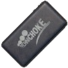
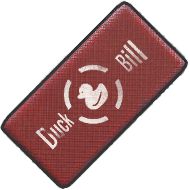
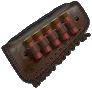

|
|
| 장탄수 | 5 |
| 발사 모드 | 단발 |
| 몸통 기본 | 216 (24x9) |
| 몸통 Lv1 | 151 |
| 몸통 Lv2 | 130 |
| 몸통 Lv3 | 97.2 |
| 머리 기본 | 324 |
| 머리 Lv1 | 226.8 |
| 머리 Lv2 | 194.4 |
| 머리 Lv3 | 145.8 |
| 팔/다리 | 97 |
| 저지력 | 5000 |
| 탄속 | 360m/s |
| 연사 간격 | 0.750초 (80RPM) |
| 재장전 시간 (전술 재장전) | 4.210초 (0.635초 / 0.715초 |
| 영점 거리 | 50 |
| 탄퍼짐 | 5.5 |
| MOA | - |
| 피해감소거리 | 1~200m |
| 등장 지역 | 에란겔, 미라마 |
| 총구 |  |  |
|---|---|---|
| 개머리판 |  |
원판은 트렌치 건으로 유명한 윈체스터 M1897이며, FPS나 영화등 매체에서 흔히 볼 수 있는 전통적인 펌프액션 샷건. 펌프액션 샷건이라 그런지 '펌프'로 많이 줄여 부른다.
산탄총인만큼 근거리에서 위협적인 피해량을 가졌으며 드랍율도 좋아 초반 싸움하기엔 좋지만, 작동방식이 펌프액션이라 한 발 쏘고 펌프를 당기는 지연 동작이 있는데, 이 시간이 0.7초로 한 끗 차이로 승부를 가르는 실전에선 분명 짧지않은 시간이다. 2발을 거의 동시에 때려박을 수 있는 S686이나 5연발까지 반자동 사격이 가능한 사이가에 비하면 이도저도 아니라 외면하는 사람들도 적지 않다.
무엇보다 치명적인 단점이 하나 있으니, 바로 재장전 도중 문을 여는 등의 다른 행동을 하거나 장전을 마치고 최초로 펌프를 당길 때 탄피가 떨어져 발생하는 딸그락 소리다. 이 소리가 괴상하게 커서 건물 밖까지 매우 선명하게 들리기 때문에 자신의 위치가 노출되기 쉽다. 초중반 개싸움 때야 아무래도 상관없지만, 인원이 어느 정도 정리되고 난 이후에는 '나 여기 있소' 하고 광고하는 꼴이다.
하지만 장탄수가 더블배럴보다 많아 여러 적들을 상대하기가 좋고 느린 연사력 덕분인지 사이가에 비해 심한 반동에 영향을 받지 않으며 초크를 이용한 사거리도 약간 길다는 점을 최대한 활용하여 엄폐물에 숨으면서 빼꼼샷 등으로 한발씩 침착하게 사용한다면 다대다 싸움이 잦은 스쿼드 전에서 사이가 대용으로 쓸 수도 있고, 초탄으로 적이 안죽더라도 적이 나를 못 죽이는 초보~중수 레이팅대까지는 충분히 쓸 만하다.
저티어 총기라 드랍율도 거의 권총이랑 비슷할 정도로 잘나오는 건 나름 장점. 낙하산에서 내리자마자 교전을 해야 될 때 주위를 조금만 둘러봐도 매우 쉽게 발견할 수 있다.물론 뒤지다가 타 샷건이나 AR, SMG를 먹으면 바로 버려지는 신세.
매번 쏜 뒤 차탄을 펌핑해서 장전하는데, 볼트액션 SR과 비슷하게 장전이 취소될 수 있다. 점프~착지를 하든가, 사격 중에 무기를 교체하는 등의 이유로 장전을 취소되면, 다음 사격에 빈총일 때가 있다. 치명적인 실수이니 주의. 또한 장전을 하는 도중 사격을 누르면 펌프질을 하면서 장전이 중단되고 곧바로 전투가 가능하다. 장전중 적이 진입하는 급박한 상황에서는 1~2발만 장전하고 사격하는 법도 좋은 활용법이다. 또한 죽창으로 유명한 더블배럴의 한 방과 펌프샷건의 한 방 대미지는 동일하다는 것을 잊지 말자.
펌프샷건을 잘 활용하려면 침착함이 생명이다. 0.7초 펌핑이라는 큰 패널티가 있지만 반대로 생각해 본다면 한발이 빗나가더라도 0.7초 안에 다시 재조준할 여유가 있다는 것이다. 몇발 맞더라도 절대로 당황하지 말고 제대로 조준해서 산탄을 박아주자. 물론 상술했다시피 고레이팅에선 일발필중이 필수다
0발일 때 장전을 하면 장전음이 6번 나고 탄도 6번 넣지만 장탄수는 5발이다. 아마 서버와 클라이언트 간의 지연이 어느 정도 있을 시에 발생되는 문제같다. 클라이언트 측에서 탄알을 넣는 모션과 서버에서 탄창에 1발이 추가되는 것의 타이밍이 맞지 않아 6번째 탄알을 넣는 모션이 완료된 시점에서야 5번째 탄이 탄창에 장전되어서 그런 거 같다. 이 현상은 최적화가 어느정도 진행된 이후에는 잘 보이지 않는다. 비정상적인 재장전 탄피소리와 함께 버그덩어리인 무기이지만 출시 초기부터 여전히 고쳐지지 않는다. 얼리 초기 때부터 장전이 완료됐음에도 불구하고 거리가 가까워지면 무조건 탄피 떨어지는 소리가 나는 버그는 현재까지 수정되지 않았다.
 |
|
| 장탄수 | 2 |
| 발사 모드 | 단발 |
| 몸통 기본 | 216 (24x9) |
| 몸통 Lv1 | 151 |
| 몸통 Lv2 | 130 |
| 몸통 Lv3 | 97.2 |
| 머리 기본 | 324 |
| 머리 Lv1 | 226.8 |
| 머리 Lv2 | 194.4 |
| 머리 Lv3 | 145.8 |
| 팔/다리 | 97 |
| 저지력 | 5000 |
| 탄속 | 370m/s |
| 연사 간격 | 0.200초 (300RPM)) |
| 재장전 시간 | 3.000초 |
| 영점 거리 | 50 |
| 탄퍼짐 | 5.0 |
| MOA | - |
| 피해감소거리 | 1~284m |
| 등장 지역 | 에란겔, 미라마 |
| 총구 | |
|---|---|
| 개머리판 |
필드드랍 저격소총. 성능은 더도말고 덜도말고 딱 Kar98k 상위호환이라서 Kar98k와 마찬가지로 2레벨 헬멧까지도 헤드샷 한방 처치가 가능하다. 게다가 피해량은 약간 더 높고 탄창식 장전 덕분에 기본 장전 속도도 더 빠르고 대용량 탄창을 장착할 수도 있다. 탄속은 살짝 더 빠르며 그만큼 더 작은 낙차를 지녔다. 발사음은 중저음이라 '탕'보다는 쾅하는 느낌으로 상당히 묵직하지만 소음기를 장착했을 때엔 발사음이 마치 사진 플래시 터트리는 소리처럼 바뀌어 듣다보면 이 매력적인 특징 때문에 카메라라는 별명이 있다.
본래 보급 상자 전용 무기였고 피해량도 AWM 다음 수준이여서 대미지가 조금 약한 대신 7.62mm를 쓰기 때문에 탄 수급이 용이한 AWM 취급을 받았지만 2018년 5월 3일자 #14 패치 이후로 기본 공격력이 88에서 79로 하락하고 필드 드랍으로 변경되었다. SR 가짓수를 늘리고 범용적으로 사용할 수 있게 하기 위한 패치라고 한다. 총 대미지는 79(변경 후 피해량)×250%(헤드샷)-55%(3뚝 방어력)=88.875 이며 3레벨 헬멧 기준 내구도 197을 깎을 수 있다.
하지만 이번 M24 필드드랍 패치는 유저들에게 엄청난 충격과 동시에 그 주제에 대한 열띤 토론장이 펼쳐지도록 만들었다. M24의 필드드랍화를 통해 kar98k는 가차없이 버려질 것이라는게 대부분의 의견이다. 앞서 말했듯이 M24의 성능은 '더도말고 덜도말고 딱 Kar98k 상위호환' 수준이기 때문이다. M24의 성능이 좋은 만큼 드랍율도 극악이지만 솔직히 체감상으로 kar98k의 드랍률도 극악인 것은 별반 다를게 없다.
결국 결과적으로 M24는 이번 패치로 극상향을 받았다. kar98k보다 모든 면에서 뛰어난데다 대미지 하향을 받고도 여전히 강력하고, 필드드랍이며 탄수급도 매우 편리하다. 희소성, 능률, 가치 등등의 균형을 잘 잡아오던 볼트액션 소총들이 이번 패치로 게임에 적잖은 영향을 주게 되었다. 따라서 이번 M24 필드드랍화 패치는 미완성된 업데이트이며, 앞으로의 볼트액션 소총에 대한 추가 업데이트 사항에 따라 이번 패치의 성공 여부가 갈리게 된다.
14차 패치 이후에 의도한 것은 아닌걸로 보이나 M24의 모델이 찰흙처럼 보이는 버그가 생겼다.